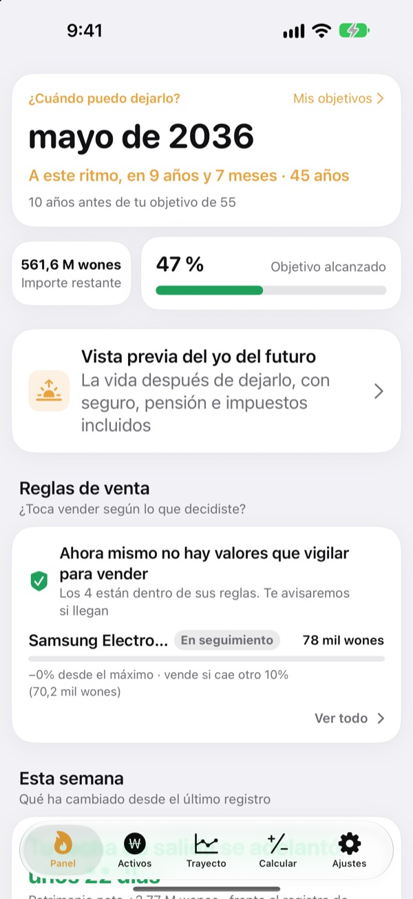
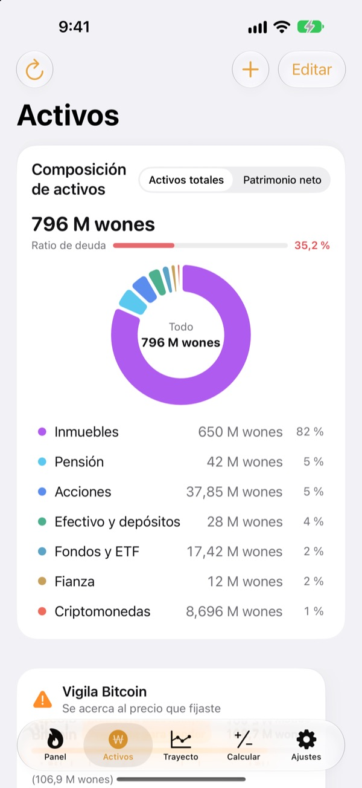
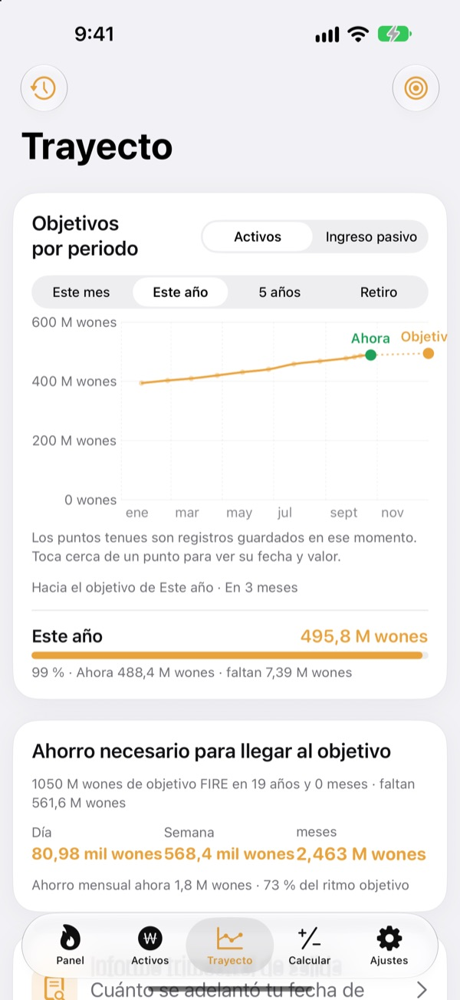
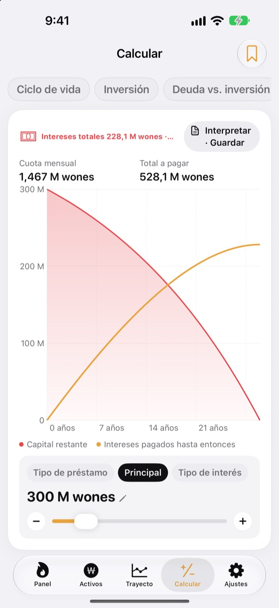

¿Cuándo podrás dejarlo?
Con números, no a ojo.
Pon lo que gastas y lo que tienes ahorrado y verás el mes en que podrías decir adiós. Cada vez que cambian tus activos, ves si esa fecha se acerca o se aleja.
Sin cuenta. Tus registros se quedan en tu dispositivo.

Calcula tu fecha de salida
Mueve los controles. Es el mismo cálculo que hace la app en su primera pantalla.
¿Sigues haciendo cuentas de cabeza para ver si ya puedes dejarlo?
Con el banco, el bróker, el plan de pensiones y la fianza del alquiler cada uno por su lado, hasta tu total se vuelve borroso, y tu fecha de salida se queda en una corazonada. Toesagak lo reúne todo en una pantalla y recalcula sin parar, a partir de ese total, el mes en que podrías dejarlo.
Todos tus activos en una pantalla
Inmuebles, acciones, fondos y ETF, pensiones, efectivo y depósitos, fianzas, criptomonedas y préstamos, agrupados por tipo, con tus activos totales, tu patrimonio neto y tu ratio de deuda.
Los precios de acciones y criptomonedas se descargan para mantener los valores al día, y con una captura de la app de tu bróker importas posiciones y valores de una vez.

Cuánto al día para llegar
Ve este mes, este año, cinco años y la jubilación como objetivos, junto a tus registros anteriores, en un solo gráfico. También te dice cuánto ahorrar al día, a la semana o al mes para ir por buen camino.
Cuando tus activos cambian, el registro de esa semana se guarda solo, así que tu historial se construye sin esfuerzo.

Haz números antes de decidir
Calculadoras para la evolución de tu patrimonio a lo largo de la vida, inversión, amortizar deuda frente a invertir, préstamos, depósitos y ahorro, el poder adquisitivo de tu sueldo y convertir dinero en horas. Mueve un valor y el gráfico se redibuja, con la curva anterior en línea de puntos para comparar.
Pon nombre a las configuraciones que repites y guárdalas.

Empieza en tres pasos
- 1
Pon tu gasto y tu edad
Con números aproximados basta. Tu fecha de salida aparece al momento.
- 2
Añade tus activos
Cuanto más los desgloses, más precisa será la fecha.
- 3
Échale un vistazo de vez en cuando
Los registros semanales se acumulan solos y puede avisarte el día 1 de cada mes.
Cómo calcula la app
- Objetivo
- Un año de gastos tras dejar de trabajar ÷ tasa de retirada segura (al 4 %, 25 años de gastos)
- Fecha de salida
- El mes en que tu patrimonio neto, más lo que ahorras cada mes y creciendo a la rentabilidad esperada, alcanza el objetivo
- Activos totales
- Todo lo que tienes, sumado
- Patrimonio neto
- Activos totales menos deudas como los préstamos
- Progreso
- Patrimonio neto ÷ objetivo. También puedes seguirlo por ingresos pasivos
- Lo que puedes cambiar
- Gasto mensual, tasa de retirada del 2 al 6 %, rentabilidad esperada del 0 al 12 %, la edad a la que te gustaría dejarlo
Todos los resultados son cálculos orientativos basados en tus datos y no constituyen asesoramiento de inversión.
Preguntas
¿Dónde se guardan mis registros?
Solo en tu dispositivo. No hace falta registrarse y no se envía nada al desarrollador. Activa la sincronización con iCloud en Ajustes para ver los mismos registros en tu iPhone y tu iPad a través de tu propia cuenta de iCloud.
Los precios no se actualizan.
Las acciones de EE. UU. y de Corea, las criptomonedas y los tipos de cambio funcionan sin configurar nada. Comprueba tu conexión a internet y que el ticker o el código sean correctos. Los precios de pisos usan datos inmobiliarios públicos de Corea y necesitan una clave de servicio gratuita que se introduce en Ajustes.
¿Qué diferencia hay entre activos totales y patrimonio neto?
Los activos totales son todo lo que tienes sumado. El patrimonio neto es eso menos deudas como los préstamos. Tu fecha de salida se basa en el patrimonio neto.
¿Cómo paso mis registros a otro dispositivo?
Usa Exportar en Ajustes para crear un archivo de copia de seguridad, guárdalo en Archivos, iCloud Drive o el correo y restáuralo en el nuevo dispositivo. Las copias nunca incluyen claves de API. La app también guarda automáticamente en el dispositivo tus 20 copias más recientes.
¿Cómo funcionan las alertas de venta?
Para cada posición, fija cuánto puede caer desde su máximo o un precio objetivo. Cuando cruza esa línea, recibes un aviso. Mientras sube, no te molesta. Los precios se comprueban al abrir la app y cuando iOS lo permite en segundo plano (normalmente cada pocas horas), así que no es un seguimiento en tiempo real.
¿Puedo mantener mis cifras en privado?
Activa el bloqueo de la app en Ajustes para abrirla con Face ID o tu código. Con el bloqueo activado, el recordatorio mensual tampoco muestra cifras.
¿Puedo echar un vistazo primero?
Activa los datos de demostración en Ajustes para recorrer todas las pantallas con los activos de una persona ficticia. Al desactivarlos, tus registros vuelven tal cual. Los datos de demostración no están disponibles con la sincronización de iCloud activada.
¿Cómo borro todos mis datos?
Al eliminar la app se borran todos los registros guardados en el dispositivo. Si quieres conservar una copia, exporta antes un archivo de copia de seguridad en Ajustes.
¿Puedo invertir basándome en estas cifras?
Los resultados de Toesagak son cálculos orientativos basados en tus datos y en una rentabilidad supuesta. No son asesoramiento de inversión, y los resultados reales dependen del mercado y de tu situación.
¿Errores, ideas o dudas? Escribe a leeo@kakao.com.